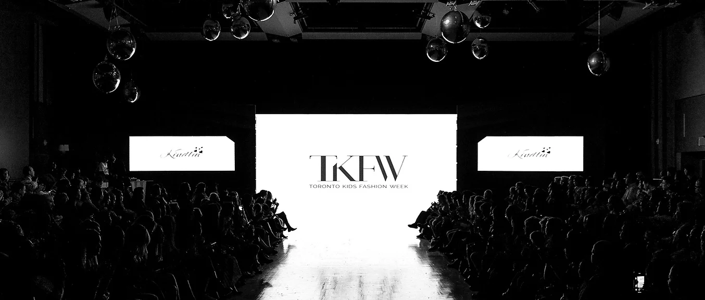

Projects
Here are some of the key projects I have worked on. Each project highlights my expertise in marketing, content creation, and strategic planning.
-
Social Media Campaign for Wendy's, Fort St. John (BC):
Created a hashtag-driven campaign (#WendysFreshInFortStJohn) to promote Wendy’s fresh menu items, generating over 500 customer interactions and a 10% boost in online orders. -
Marketing Strategy for Papa Johns, Fort St. John (BC):
Boosted Papa Johns' community presence through sponsorship of local events and partnerships with schools, resulting in a 15% increase in foot traffic during weekends. -
Content Creation for Soul Sweet Cafe & 250 Pizza (Fort St. John):
Managed content creation for Soul Sweet Cafe, curating and scheduling engaging posts that increased social media engagement by 30%. Highlighted seasonal menu items through professional food photography and creative storytelling. -
Marketing Assistant (Volunteer) for TKFW Montreal:
Supported event marketing efforts for TKFW Montreal, creating promotional materials and assisting with community outreach.
 -
Communications Plan - Lazy Creatures Cafe:
Developed a detailed communications plan to boost Lazy Creatures Cafe's brand visibility and customer engagement.
Download Plan
Skills
Below are the core skills I bring to every project:
- Content Marketing and Strategy: Expertise in creating and executing impactful campaigns to increase brand visibility and audience engagement.
- Search Engine Optimization (SEO): Skilled in optimizing content for organic search rankings, including keyword research, on-page SEO, and link-building strategies.
- Social Media Management: Proficient in managing social platforms like Instagram, Facebook, and LinkedIn, with experience in paid advertising and analytics.
- Data Analysis and Reporting: Ability to interpret data to guide marketing decisions using tools like Google Analytics and Excel.
- Email Marketing and Automation: Experience in designing and running email campaigns using tools like Mailchimp, achieving high open and click-through rates.
- Project Management: Adept at planning and managing cross-functional projects using tools like Asana and Trello to meet deadlines and goals.
- Languages: Fluent in Cantonese, Mandarin, and English (IELTS 7).
- Certifications: Google Data Analytics Certificate, Google AdWords Certified.